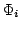
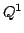
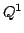

So how do you find out whether calling these functions is ok or not? In other
words, how do you know whether shape function  has only one non-zero
component, or more? For this, there are two functions:
FiniteElement::is_primitive(i) returns as a bool whether
the shape function has only one non-zero component. For example, for a
 element, this would be true for all 22 shape functions.
For a finite element for which every shape function is non-zero in more than
one component, it would be false for all indices
element, this would be true for all 22 shape functions.
For a finite element for which every shape function is non-zero in more than
one component, it would be false for all indices  . It might also
be true for only some shape functions, for example if the velocity
components of the Stokes discretization are done using some more complicated
element, but the pressure component with a , then it would be
true for the pressure shape functions, but false otherwise.
. It might also
be true for only some shape functions, for example if the velocity
components of the Stokes discretization are done using some more complicated
element, but the pressure component with a , then it would be
true for the pressure shape functions, but false otherwise.
Second, the FiniteElement::n_nonzero_components(i) function returns
in how many components the  th shape function is non-zero. Again, for the
th shape function is non-zero. Again, for the
 combination, this would yield the value 1 for all allowed
indices
combination, this would yield the value 1 for all allowed
indices  . For coupled elements, it would be greater than 1.
. For coupled elements, it would be greater than 1.
Third, you may sometimes want to know in which components a certain shape function is non-zero. For this, the FiniteElement::get_nonzero_components(i) function is the right thing: it returns a reference to a vector of boolean values, one for each component of the vector-valued finite element, and the values indicate whether the shape function is non-zero for each of them.
Note that if you have the result of FiniteElement::get_nonzero_components(i), then the result of FiniteElement::n_nonzero_components(i) is simply the number of true values in the array returned by the first function. Likewise, FiniteElement::is_primitive(i) is simply whether FiniteElement::n_nonzero_components(i) returned a value other than 1. The functions are thus redundant in some way, but useful nevertheless. Of course, the values of the FiniteElement::is_primitive(i) and FiniteElement::n_nonzero_components(i) functions are not recomputed every time based on the result of some other function, but are cached once at the time of construction of a finite element object.